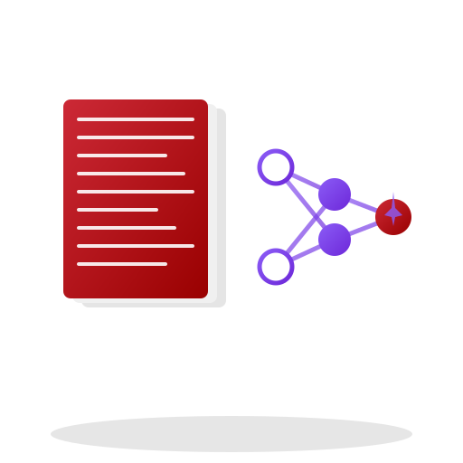

Semantic search and cited answers over your Zotero library. Ask questions in plain language and get responses grounded in your own PDFs, with citations to the exact document and page. Runs fully local with Ollama or LM Studio — your library never leaves your machine.
RAG Assistant indexes the PDFs in your Zotero library and uses retrieval-augmented generation to answer questions grounded in their content. Every answer includes citations to the specific sources and page numbers used, so you can verify each claim and follow up on interesting findings rather than trusting a summary that obscures where the information came from.
It's built for researchers navigating large literature collections — preprints, embargoed work, sensitive material. With a local model via Ollama or LM Studio, your documents and queries never leave your machine. When you'd rather use a cloud model, it connects to OpenAI, Anthropic, Google, Mistral, Groq, or OpenRouter.
PDFs are extracted with page-level granularity and split into roughly 800-character chunks with 200-character overlap, cut on sentence boundaries. Each chunk carries its item ID, title, authors, year, tags, collections, item type, and page number — the metadata behind both filtering and citations.
Embeddings are generated with SentenceTransformers (downloaded automatically on first use) and stored in ChromaDB. Choose from BGE-base (default, best quality), SPECTER (scientific papers), MiniLM-L6 (balanced), or MiniLM-L3 (fastest); each model creates its own collection, so you can switch without re-indexing if the index already exists. The backend is FastAPI, the frontend React and TypeScript, packaged as an Electron desktop app with automatic updates.
On macOS, install via Homebrew. On Windows, install via winget. Linux .deb builds are available from the GitHub Releases page.
winget or the installer from Releases. May show a SmartScreen warning, as the build isn't code-signed.
.deb package; Python and all dependencies are bundled.
zotero.sqlite database for PDFs and metadata.
Setup and usage guides covering LLM providers, profiles, and prompting. Browse all docs →
Does my library leave my machine?
All indexing and processing happen locally. If you use a local model via Ollama or LM Studio, nothing leaves your machine at all. If you choose a cloud provider, only your queries and the retrieved document chunks are sent to their API — never your full library.
Do I need an API key?
Not if you run a local model with Ollama or LM Studio. Cloud providers (OpenAI, Anthropic, Google, Mistral, Groq, OpenRouter) require an API key you add in Settings.
Can it index scanned PDFs?
Only if they contain selectable text. Scanned documents without OCR cannot be indexed — run OCR on them first.
How long does indexing take?
It depends on library size. Initial indexing builds embeddings for every PDF and can take a while for large collections; subsequent runs only process new or changed items.
How much does it cost?
The app is free and open source under Apache 2.0. Your only potential cost is cloud LLM API usage, if you opt for a cloud provider instead of a local model.
RAG Assistant for Zotero is built and maintained by Quiet Signals Lab. Bug reports and feature requests are welcome as GitHub issues; contributions are welcome too — open an issue to discuss significant changes first.
For issues, include your OS, the LLM provider you're using, and a description of what happened. For anything else, reach out directly.
hello@quietsignalslab.com →